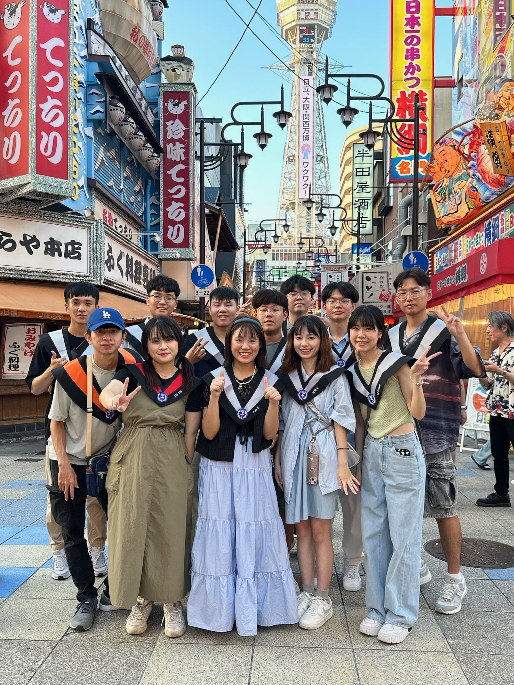

merry christmas
嗨！早安，現在是 12/09 的早上6點，我剛從床上爬起來泡了杯咖啡。
昨天上課無聊，突然翻到我們那時候畢業旅行去大阪玩的照片，雖然現在大家都在彼此的軌道上努力生活著，但我真的很喜歡那時候的氛圍，大家一起在外隨意逛街、吃美食，每天睡不到3小時之外又花了一堆時間在找路，每個情況都足以成為一段特別的回憶。
已經過去了一年多了，我想說應該要再跟大家聊聊天，所以就起床寫了這封聖誕信。
很多人都說當研究生就是沒錢沒時間，不知道這句話是不是真的，但我現在確實是卡在這樣的循環中。
我覺得我生活的方式就處於兩個極端，一方面想充實自己，但另一方面又覺得好累只想躺在床上睡 10 小時，感覺生活就是一直在跟自己妥協取得平衡，這大概就是長大的代價吧。
最近天氣變冷，請好好照顧自己的健康。這種天氣總讓我覺得如果能去日本看雪就好了。
不知道你愛不愛看雪？總覺得下雪的日子特別浪漫，情侶在路上拉著手，朋友們在屋裡聚會，好像世間再也沒有煩惱一樣。
有機會的話再一起出去玩吧，特別想回到那些日子呢。
總之我最近過得還算好，雖然忙但也多了些挑戰。
你也要好好加油，開心地活著才是最重要的。
希望明年的冬天也能這樣寫一封信給你。
聖誕快樂！
2025/12/09

好想睡覺